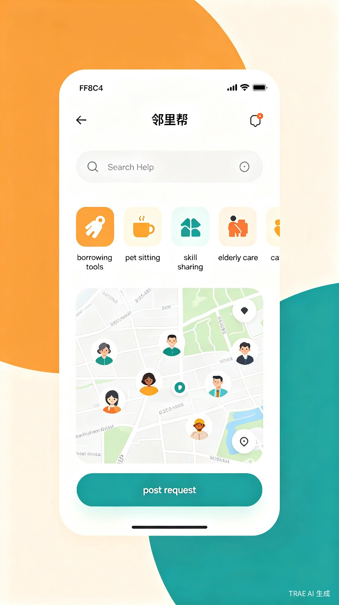

智能社区互助平台
让每一次求助都被温柔回应，让每一份善意都找到归处
「邻里帮」是一款基于 AI 匹配算法的社区互助小程序，致力于重建城市邻里之间的信任连接，让社区资源流动起来。
现代城市生活中，邻里之间互不相识，大量社区资源（工具、技能、时间）被闲置浪费，而居民的小需求却找不到就近的帮助渠道。
疫情期间社区团购群、互助群的爆发式增长，证明了居民对社区互助的强烈需求，但缺乏一个专业、安全、智能的常态化平台。
微信小程序 + 社区管理后台系统。用户无需下载 App，微信扫码即可使用，降低使用门槛。

独居租房，偶尔需要借工具、临时照看宠物
需要临时托管、拼单购物、技能交换
需要上门协助、智能手机教学、陪伴聊天
没有「邻里帮」之前，用户只能依赖业主微信群发帖求助，信息被淹没、无法沉淀、缺乏信任机制。很多需求因为"不好意思开口"或"不知道找谁"而被压抑。
基于地理位置、技能标签、信用评分，自动将求助者匹配给最合适的邻居，响应时间平均缩短至 5 分钟。
每次互助完成后双方互评，积累「邻里信用分」，高分用户享有优先匹配权和社区荣誉标识。
真实身份认证 + 虚拟号码联系 + 紧急联系人机制，保障每一次线下见面的安全。
为物业和居委会提供数据看板、活动发布、志愿者管理等功能，赋能社区治理。
重建城市社区的人际关系纽带，减少资源浪费，提升居民幸福感。据调研，使用互助平台的社区居民归属感提升 40% 以上。
通过 AI 匹配和信用体系，将传统社区互助的"靠运气、靠人情"转变为"靠算法、靠制度"，求助响应效率提升 10 倍以上。